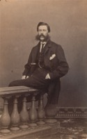

Beaubien-Perrault-Benington - Person Sheet
Beaubien-Perrault-Benington - Person Sheet

Birth27 Nov 1829, Québec, Québec
Death22 Nov 1898, Ottawa, Ontario
Occupationavocat, senateur
FatherHon. Philippe Panet (1791-1855)
MotherM. Luce Casgrain (1802-1870)
Spouses
Birth1839
Death4 Oct 1860, Varennes, Québec159
Burial6 Oct 1860, Varennes, Québec159
FatherFélix Lussier
Marriage7 Jan 1856, Varennes, Québec159
Death11 Apr 1878, Ottawa, Ontario
Marriage4 Jun 1862, Vaudreuil, Québec
ChildrenAlphonse-Eugène (1867-)
Marriage11 Sep 1879, St-Eustache, Québec
ChildrenEdouard de Bellefeuille (1881-)
Notes for Hon. Charles Eugene Panet
[Roy] Avocat. Coroner de Québec 1860. Colonel, senator 1874. Deputy
minister of militia and defence 1875-98. Bar 1854. Senate 1874.
Il fut le fondateur du College Militaire Royal de Kingston? En
office durant la revolte de RIel.
233 http://www.parl.gc.ca/parlInfo/Files/Parliamentarian.aspx?Item=44c2a9bd-cade-4546-af5b-d2e205f59bff&Language=F
http://en.wikipedia.org/wiki/Charles-Eug%C3%A8ne_Panet
He was married three times and had sixteen children. The former Panet House, was built inOttawa, Ontario by Colonel Charles-Eugène Panet, Deputy Minister of Militia and Defence, in 1876. In 1986, the Panet house became part of the King Edward Avenue Heritage Conservation District. The house is currently the Embassy of the Republic of Angola. There is a house at RMC named in his honor.
https://en.wikipedia.org/wiki/Charles-Eug%C3%A8ne_Panet
says he had 16 children
minister of militia and defence 1875-98. Bar 1854. Senate 1874.
Il fut le fondateur du College Militaire Royal de Kingston? En
office durant la revolte de RIel.
233 http://www.parl.gc.ca/parlInfo/Files/Parliamentarian.aspx?Item=44c2a9bd-cade-4546-af5b-d2e205f59bff&Language=F
http://en.wikipedia.org/wiki/Charles-Eug%C3%A8ne_Panet
He was married three times and had sixteen children. The former Panet House, was built inOttawa, Ontario by Colonel Charles-Eugène Panet, Deputy Minister of Militia and Defence, in 1876. In 1986, the Panet house became part of the King Edward Avenue Heritage Conservation District. The house is currently the Embassy of the Republic of Angola. There is a house at RMC named in his honor.
https://en.wikipedia.org/wiki/Charles-Eug%C3%A8ne_Panet
says he had 16 children